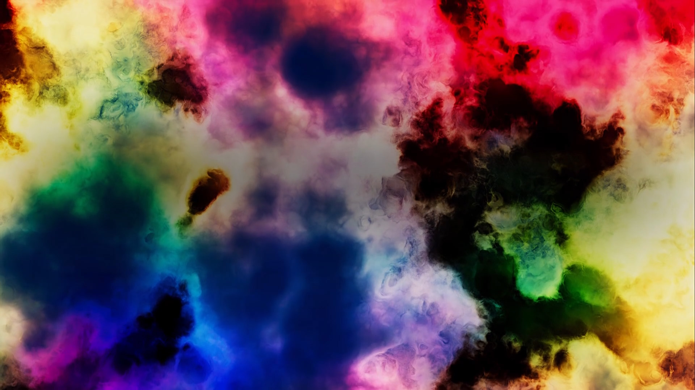
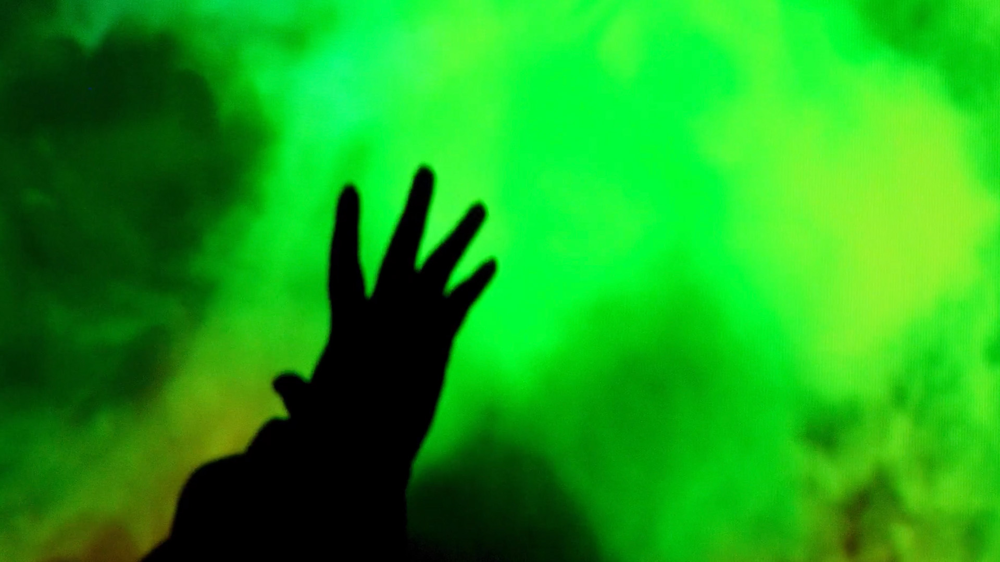
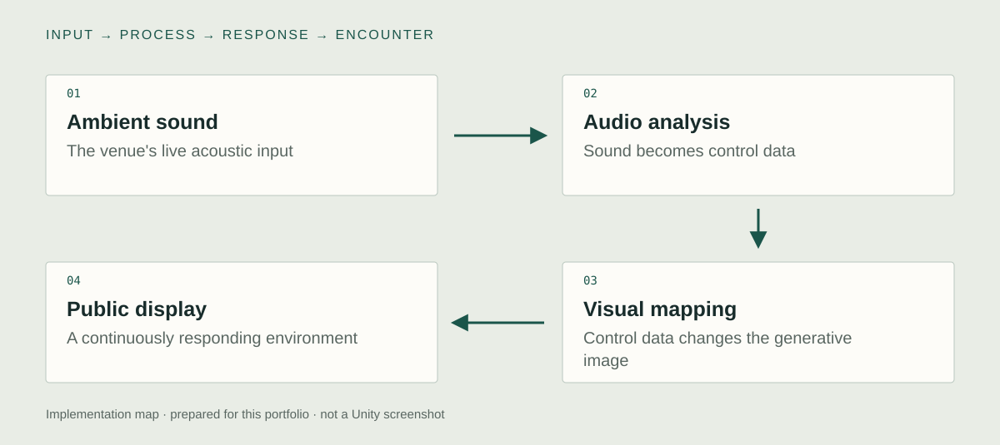

Unity implementation
Live sound input
I developed the sound-responsive visualizer around ambient sound in the installation space. The room supplies a changing input, including ordinary activity and abrupt acoustic changes. The current documentation establishes that live relationship, while the specific input device and audio-analysis code still need a production capture.

Audio-to-visual mapping
I connected sound-derived control data to the movement and density of the cascading, cloud-like image. The response is a visual translation of the venue, rather than a literal waveform. The precise analysis features and mapping should be taken from the original source, so FFT, frequency bands, or smoothing are not assumed here.
Installation runtime
I integrated the visualizer into the public installation. The image is continuously shaped by the surrounding soundscape, making collective activity part of the displayed form. A future performance claim would need a recorded environment and measurements, separate from this documented audiovisual behavior.

System & design decisions

- 01Ambient sound
The venue's live acoustic input
- 02Audio analysis
Sound becomes control data
- 03Visual mapping
Control data changes the generative image
- 04Public display
A continuously responding environment
The room is the input device
The visualizer must be considered in relation to an occupied venue, where background activity and sudden changes are part of the material.
Translate rather than illustrate
The response is a generative form rather than a literal waveform. The technical task is the connection between live sound and useful visual variation. The precise feature extraction remains a code-capture task.
Concept
Can an image make the collective activity of a space perceptible through its sound?
The input is the ordinary acoustic life of the venue. Visitors contribute through their presence and activity rather than through a dedicated controller. The waterfall-like form gives that dispersed input a shared surface, making a temporary portrait of the space's intensity.
Development
Retrospective planning notes, prepared for this portfolio.
Listen to the site
Define the acoustic setting and how quiet, ordinary, and busy conditions should differ visually.
Choose the visual vocabulary
Find a form that can change continuously as the public soundscape changes.
Rehearse in context
Check the relationship between the sound being heard and the image being seen at the actual installation scale.
Further research
Which sound-to-image mappings make changes in collective activity easiest to perceive?
Vary: The visual parameter controlled by the same audio signal.
Hold consistent: Recorded sound input, display sequence length, and viewing conditions.
Proposed comparison. No controlled study or measured effect is reported.